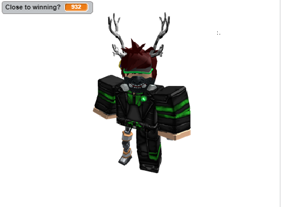
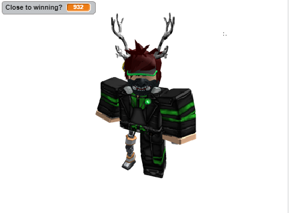

The context of the game is to avoid touching the edges or the character in the middle that is constantly growing. My scoring system is a countdown type score where you must survive until the "Close to Winning?" variable hits zero. In my game, there are no use of randomness since it is based on just a character slowly covering the screen. The game gets more difficult when you click on the "Press me" Button where the character's growth enhances by 10 and the countdown timer is set to 3000. The game ends when the timer hits 0 and you lose when you touch the border of the screen or the game stops when your mouse touches the character.
What inspired me to create the game was when I was working on my Cat Clicker game, I accidently set the code to where the Cat's size would grow as I clicked. From there, I thought of making a game where you must avoid touching the growing sprite and to win, you must survive until the scoring system reaches zero. Two successful points in making the games were having the scoring system and the sprite cooperate in a way where when you win, the sprite would stop growing and would switch to a different costume. Two frustrating obstacles were making the button pop up and hide in certain scenarios and create it so the growing command to not interfere with the mouse when it's not touching.
The Algorithm that contributes to my game is the script that comes with the "playbutton" broadcast. This script is an algorithm because it's a set of rule that initiate when you start the game. For example, it sets the variable to 1000, sets sprite to (0,0), switches to costume 1, stops script when mouse hovers over sprite, and repeats when you press the flag.
Two travellers, Anderson & Noah, stumbled upon a run-down village and decided to take refuge there for the night. Upon entering, they've noticed that rotting corpses were everywhere and that the village was contaminated with the bubonic plague. They were informed by the chief that there's a "cure" which was actually a test of good will and judgement. If you fail that test, the plague will affect those who've you loved. In the end, one of the travellers decided to sacrifice themselves to stay back and continue the cycle of being the village chief and one left to live their life.
Making the game, John and me faced a variety of problems. An incremental development was coming up with the ideas and how to narrate our story . When we found out how we wanted our story, we added ideas and searched up medieval themes that influenced us to create our story. An iterative development was writing "line" commands and creating multiple paths based on user choices. Organizing scenes and functions had greatly benefitted us during our developement and was a procedural abstraction from the layout of our flow-chart, allowing us more of an opportunity to come back and add more onto other events in the story without losing track of what we're doing. My favorite story was Huy and Charlie's attempt at recreating Jojo's Bizarre Adventure, they did an exceptional job at programming their functions and adding their own creativity to it.